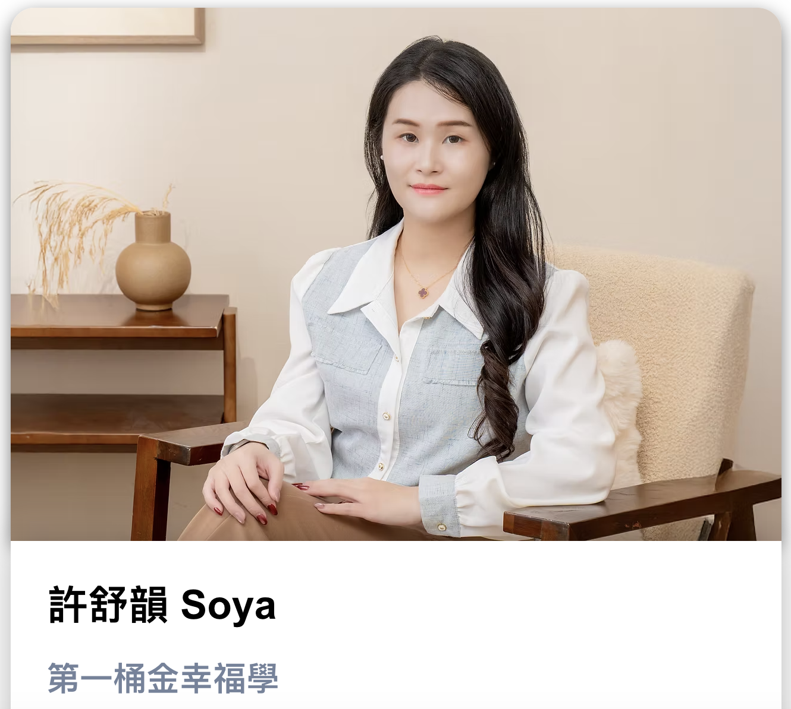

01 / 加盟品牌
01 / 加盟品牌FRANCHISE BUSINESS
十三妹螺螄粉
聚焦準加盟主的經營疑問，讓自然流量帶來加盟詢問。
近 70 家兩年拓展加盟店
讓你的內容，開始帶來客戶。
品牌經營者 ／ 專業工作者 ／ 行銷負責人

兩年拓展加盟店
半年課程營業額
策略調整後三個月營收
一支影片不必完成所有事。先想清楚：
這一次，你要讓客戶與你的關係，更靠近哪一步？
從客戶的生活情境出發，選擇他會停下來看的題材。把「所有人」縮小成一個具體的人，內容才有對話的對象。
02 / 突破短影音三大困境
每天都在回答客戶的問題，打開鏡頭卻只剩產品介紹與活動優惠。其實，你的工作日常裡，就藏著下一支影片的題目。
用「曼陀羅九宮格」，從本業延伸 8 個方向，再拆出更具體的情境。讓靈感成為可以整理的方法。
點選方向，看看題目怎麼長出來 ↙
一個急著解決問題的時刻，就是客戶需要你的時刻。
追了話題、剪了影片，留言區很熱鬧，生意卻沒有跟著變化。先看看你的內容，吸引的是哪一種人。
當目標是找到加盟主，內容就回到開店成本、獲利與經營方式。讓每個問題，都與你的服務產生連結。
私訊來了，卻不知道下一步該怎麼聊。信任還沒累積，對話就停在報價；有興趣的人，也可能在等待更多資訊。
從影片結尾的行動指引，到 LINE 詢問、案例說明與諮詢安排，讓客戶清楚知道如何開始。
影片回答顧客真正在意的事。
清楚的私訊與 LINE 聯絡入口。
用案例、方案與諮詢協助判斷。
每支影片，都要有一個
容易理解的下一步。
03 / 六大課程主題
用定位三問，釐清客戶身分、需求情境與產品價值。從你想帶來的詢問，回推內容方向。
整理你的專業與特色，讓觀眾一眼理解你是誰、能幫誰，以及為什麼值得追蹤。
把客戶常問的問題整理成題材，運用九宮格與跨領域生活情境，持續累積內容方向。
把觀眾關心的事放進開場，安排腳本節奏，選擇適合你的口播、藏鏡人或情境呈現。
讓觀眾從看完影片，到提出問題，再到了解方案。安排清楚的聯絡入口與後續互動。
理解自然流量與付費流量的角色，練習判斷適合投放的影片，依實際成效調整方向。
04 / 實戰成果解析
不同生意，不同內容切入點。
拆解受眾、題材與承接方式，
找到能帶回自己產業的思考。
01 / 加盟品牌聚焦準加盟主的經營疑問，讓自然流量帶來加盟詢問。
 02 / 知識課程
02 / 知識課程從學員輪廓發現機會，讓複雜的 AI 有容易理解的學習入口。

03 / 專業服務從受眾在意的問題出發，讓內容與後續諮詢形成連結。
把傳統生意，帶進手機裡。
讓專業被看見，也被理解。
從品牌行銷到短影音操盤，將產品價值轉成顧客聽得懂的內容。帶你理解每個案例背後，為什麼選這個人、說這件事、安排這個下一步。
讓開始這件事，再清楚一點。
內容從受眾與帳號定位開始，適合先釐清方向。你可以先整理自己的產品、服務與客戶常見問題，帶著具體情境理解課程方法。
可以依產業選擇產品示範、工作過程或由團隊出鏡。簡報也討論老闆本人、幕後策劃與專業團隊等方式，重點是找到能持續執行且傳達專業的形式。
目前規劃重點是定位、選題、腳本、呈現方式與獲客承接。拍攝設備與剪輯軟體的實作範圍，將依正式課綱公布，不預設包含完整剪輯軟體教學。
自然流量與付費流量可以有不同角色。課程主題包含兩者的差異與投放思考，是否投入預算，仍需依產品、內容成效與獲客目標判斷。
服務範圍、作業安排與課後支持尚待正式方案確認，將在開放報名時一併說明。
開課日期、線上或實體形式、費用與觀看期限尚未公布。請以本頁後續更新的正式報名資訊為準。
把你的專業說清楚，
讓需要你的人，知道如何找到你。
億萬變現全攻略 · Chance